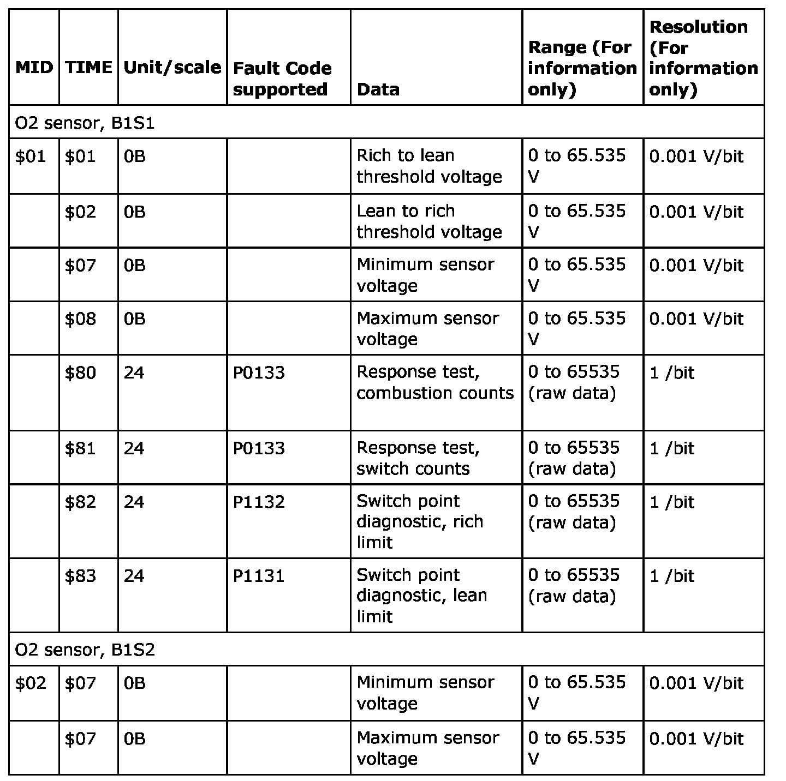
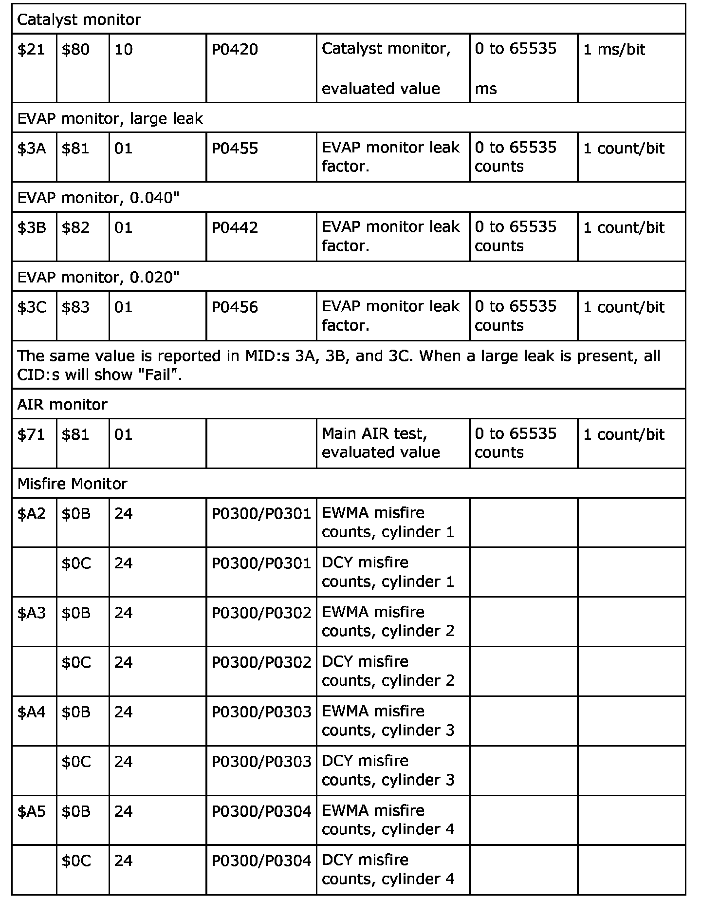

Mode 6 Data
Trionic 8, Mode 06
NOTE:
For vehicles produced prior to December 2004, the handling of MIDs 01, A2, A3, A4 and A5 is incorrect and function as follows.
- MID01, TID07 & 08: The test and limit values are fixed and do not reset at code clear, nor do they ever change values.
- MID A2, A3, A4, A5: Min and max limits do not reset to 0 at code clear.

